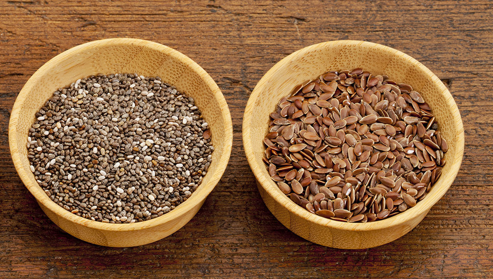
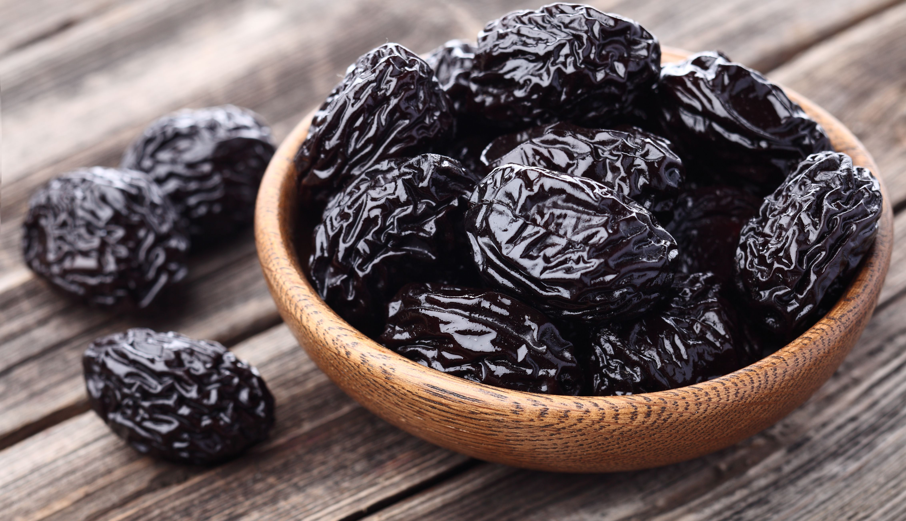
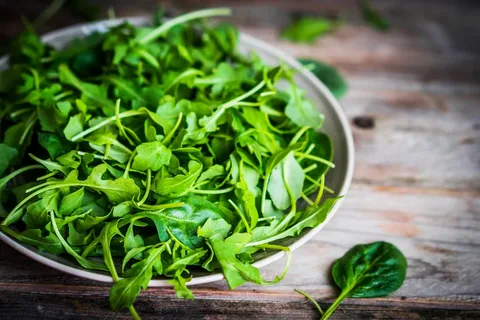
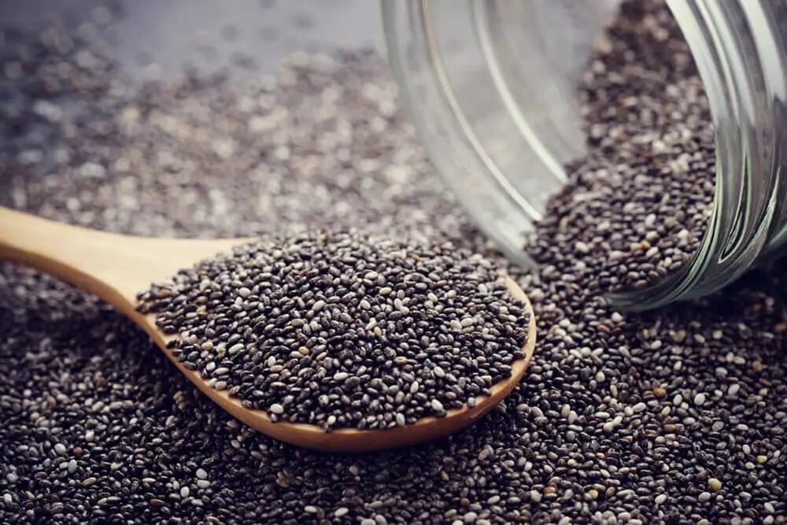
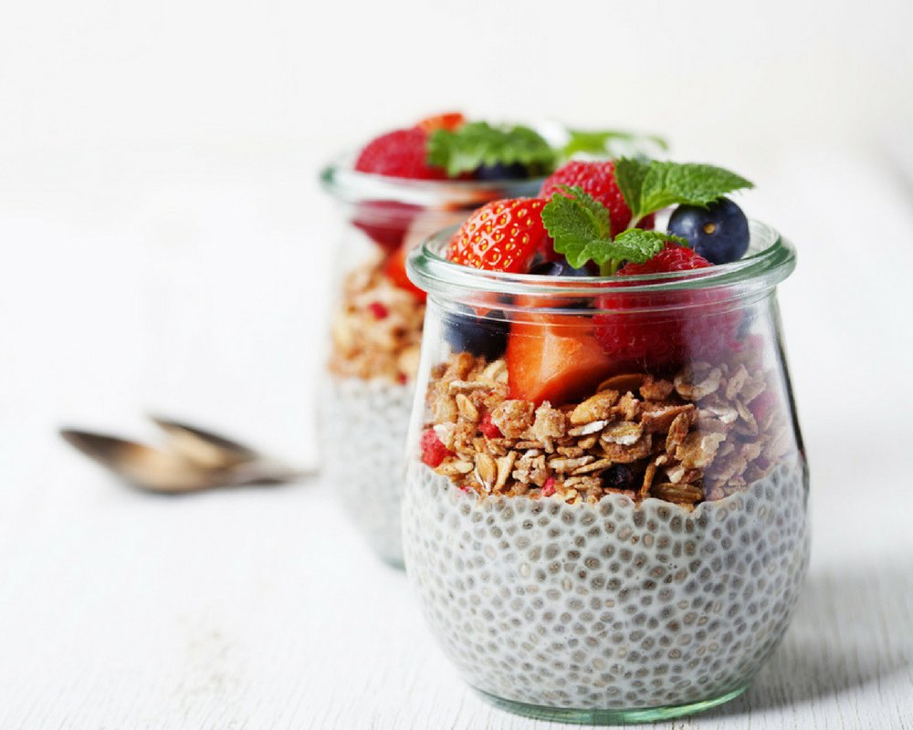
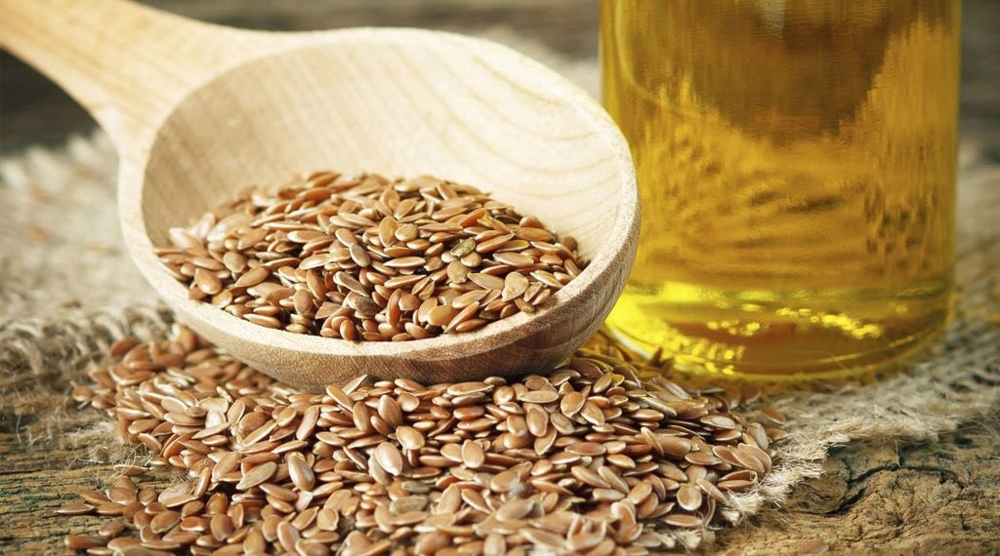

5 alimentos ricos em fibras e como consumi-los no dia a dia
Os alimentos ricos em fibras ajudam o organismo a se manter saudável!
As fibras alimentares têm um papel importante na saúde do sistema intestinal e do bem-estar como um todo. Por isso, é importante incluir alimentos ricos em fibras nas refeições de todos os dias - e, acredite, isso não precisa ser um grande desafio! Presentes em uma grande variedade de comidas, dos grãos aos vegetais, é possível criar um cardápio saboroso e diversificado com foco em aumentar o consumo desse nutriente. Confira uma lista com 5 alimentos que têm fibras para experimentar e escolher os seus favoritos!
1) Aveia e outros cereais são alimentos ricos em fibras
A aveia é famosa quando falamos de alimentos que têm fibras - e não é diferente para outros cereais, como a quinoa e o gérmen de trigo, que também são ricos nesses nutrientes! Você pode consumi-los em barrinhas, que são ótimas opções para lanches ao longo do dia. Além disso, são bons acompanhamentos para frutas, iogurtes e até mesmo para beber junto com leite. A quinoa também é um item popular no preparo de saladas e também pode ser combinada com outros legumes e vegetais ricos em fibras alimentares.

2) Semente de chia e linhaça são fontes de fibras alimentares
As sementes também são poderosas fontes de fibras alimentares e incluí-las na rotina é prático: use-as como complementos para outros alimentos! A semente de chia, por exemplo, pode acompanhar iogurtes e outros laticínios ou até mesmo deixar saladas e arroz mais crocantes e ricos em fibras. Outra semente comum é a linhaça, que pode ser batida com sucos ou misturada no preparo de bolos e pães.

3) Frutas também são uma opção para quem quer aumentar o consumo de fibras
A ameixa e a uva passa são apenas duas opções entre uma variedade de frutas que podem te ajudar a aumentar o consumo de fibras no seu dia a dia. Para aproveitar a riqueza desses nutrientes por completo, o ideal é comer as frutas com a casca - por isso, lembre-se de higienizá-las bem! Outras frutas que são conhecidas como alimentos ricos em fibras são mamão, maçã, pêra, goiaba, abacate, manga, caqui e damasco. São uma recomendação para todas as horas do dia!
4) Abóbora, pimentão, cenoura... Legumes também são alimentos que têm fibras
Legumes deixam qualquer prato mais colorido e aumentam o consumo de fibras alimentares! As opções são muitas: cenoura, beterraba, pimentão e abóbora são apenas algumas sugestões que podem fazer parte de uma alimentação saudável e rica em fibras. Versáteis, os legumes podem ser servidos crus ou cozidos e podem integrar desde saladas a pratos quentes, como sopas e caldos.

5) Verduras verde-escuras são outros alimentos com fibras
Rúcula, acelga, agrião e espinafre são alguns exemplos de verduras que também são alimentos ricos em fibras. Em geral, a cor verde escura é sinal da presença desse nutriente e também de minerais como ferro, importantes para nosso sangue. Elas podem ser servidas quentes ou frias: em saladas ou refogadas com alho para acompanhar um prato principal, só para dar algumas ideias. Além disso, esses alimentos com fibras também podem ser transformados em um suco verde delicioso.
Chia: 5 boas razões para consumir a semente diariamente

Um dos benefícios da chia é que as suas sementes são práticas e saudáveis
Você sabe para que serve chia? Rica em fibras e outros nutrientes, a semente que está ganhando o coração de quem busca uma alimentação saudável, traz benefícios para a saúde do coração, do intestino e até dos ossos e músculos. Para completar, a chia ainda é versátil: pode ser consumida de diferentes formas, de acompanhamento para a comida ou até para dar um toque extra a receitas de pães e bolos. Já se convenceu? Confira 5 razões para incluir a semente de chia na sua dieta e mostrar o que ela pode fazer pelo seu corpo!
1) Dentre os inúmeros benefícios da chia, estão a saúde digestiva e saciedade
Rica em fibras solúveis e insolúveis, a semente de chia estimula os movimentos do intestino e, assim, ajuda a prevenir a prisão de ventre. Além disso, quando combinada a uma rotina de exercícios e a alimentação saudável, a chia pode ser uma aliada do emagrecimento. As fibras presentes no grão ajudam a promover saciedade prolongada - elas absorvem a água e fazem o alimento "inchar", ganhando uma textura de gel. Assim, a fome demora mais tempo para aparecer novamente!
2) Semente de chia também serve para proteger o coração e fortalecer os músculos
Um dos maiores benefícios da semente de chia é, com certeza, a riqueza de ômega 3 - que supera até mesmo a quantidade presente nos peixes, conhecidos por esse nutriente. Nesse sentido, a semente de chia serve para proteger a saúde do coração: o ômega 3 estimula a quebra de gorduras, previne a formação de coágulos sanguíneos e diminui as taxas de colesterol. O ômega 3 presente nas sementes de chia também promove a formação de massa magra e o fortalecimento muscular.
3) Fortalecimentos dos ossos é outro benefício da chia
Você não precisa depender do leite diariamente! A semente de chia também é rica em cálcio, um mineral essencial na formação e saúde dos ossos. Alguns estudos afirmam que uma porção de chia é capaz de fornecer mais de 20% da necessidade diária desse nutriente! Assim, a chia pode ser incluída na alimentação para prevenir a osteoporose e outros quadros de fragilidade óssea.
4) Chia ajuda na prevenção da anemia
Outro mineral super presente na semente de chia é o ferro. Ele está diretamente relacionado ao sangue, já que está envolvido na produção de glóbulos vermelhos e no transporte de oxigênio para todo o corpo. A chia também contém boas quantidades de cobre, nutriente que estimula a absorção de ferro - ou seja, potencializa sua ação! Quem busca combater quadros de anemia não pode deixar de incluir a chia na dieta.
5) Chia atua também na recuperação do corpo após o exercício físico
Além do ômega 3, a semente de chia traz outro nutriente essencial para quem pratica atividade física: o potássio. Esse mineral é fundamental para o funcionamento de nosso organismo e tem um papel importante na contração muscular, incluindo o nosso coração. O potássio presente na chia ajuda a prevenir dores musculares e até mesmo aliviar enxaquecas causadas pela tensão no músculo da cabeça.
Semente de chia: para que serve e como usar esse ingrediente na cozinha

Descubra como usar semente de chia: aposte em receitas de vitaminas e massas de bolo
Você sabia que a semente de chia pode fazer parte de qualquer refeição ao longo do dia? Pois é! Extremamente saudável, é um ingrediente versátil que combina com diferentes tipos de preparos na cozinha e ajuda a saciar a fome por mais tempo. Os grãos são conhecidos por promoverem a limpeza do organismo e melhorarem a saúde do coração. Leia a matéria abaixo para entender para que serve a semente de chia, benefícios que apresenta e como aproveitá-la no cardápio.
Conheça os nutrientes e saiba para que serve semente de chia
A Semente de Chia é um alimento riquíssimo nutricionalmente e deve ser consumido com regularidade, principalmente se você quer manter o organismo livre de toxinas! Ela é uma ótima fonte de fibras, proteínas e minerais, como cálcio, ferro, magnésio, potássio e zinco. Juntos, estes nutrientes fortalecem o sistema imunológico e estimulam o melhor funcionamento do fluxo intestinal. Os grãos também possuem vitaminas do complexo B, que promovem a saúde da pele, cabelos e unhas e oferecem energia e disposição para o corpo. Maravilhoso, né?
Semente de chia: benefícios incluem saciedade prolongada
Diferentemente do que se afirma popularmente, a semente de chia não emagrece, mas pode auxiliar no processo de perda de peso (com um cardápio controlado) devido à saciedade que o ingrediente oferece. Quando ingeridos, os grãos superpoderosos absorvem parte da água presente no estômago e ganham uma textura semelhante a de um gel, fazendo com que o alimento inche levemente. Isto resulta na dilatação do órgão e no aumento do intervalo entre as refeições. Menos fome por mais tempo!
Prevenção de diabetes e combate a doenças cardíacas são outros benefícios da semente de chia
Incluir a Semente de Chia no cardápio é crucial para manter a saúde! Além de regular o intestino e aumentar a imunidade, o ingrediente também é conhecido pelas propriedades antioxidantes que possui. Rico em ácido cafeico e ácido clorogênico, o alimento ajuda a evitar o envelhecimento precoce das células e auxilia na neutralização dos radicais livres presentes no sangue, além de prevenir diabetes. A oleaginosa é fonte de ômega 3, famosa "gordura do bem", que estimula a diminuição do colesterol ruim, combate doenças do coração e promove a formação de massa magra e o fortalecimento muscular para atletas.
Descubra como usar Semente de Chia na rotina alimentar
A Semente de Chia é a cara da versatilidade! É possível usá-la durante a semana e em diferentes momentos do dia de maneira simples. Por exemplo, dá para misturar os grãos com uma porção de Iogurte Natural Integral ou mesmo aproveitá-los para incrementar sucos e vitaminas pela manhã ou no lanche da tarde. Também é possível acrescentar o ingrediente ao preparo de massas de bolo, pães e da famosa tapioca. Durante as refeições principais, garanta o sabor das carnes com chia ou na montagem de saladas verdes. Varie e promova saúde para o corpo com os benefícios da semente de chia!
Semente de chia não deve ser consumida em excesso
Apesar de bem saudáveis e com inúmeros benefícios para o organismo, os grãos não devem ser consumidos em excesso, pois podem ser bem calóricos quando ingeridos em grandes quantidades e sem restrições. A semente de chia, em específico, pode provocar inchaço e dificultar a passagem de alimentos pelo estômago e outros canais digestivos. Não queremos isso, não é? Por isso, o indicado é usar 1 colher de sopa por dia nos preparos, no máximo, para aproveitar os benefícios da semente sem gerar prejuízo ao corpo.
Sementes de linhaça: 6 razões que fazem desse alimento um aliado da nossa saúde

A sementes de linhaça são poderosos aliados para uma alimentação saudável. Esses pequeninos grãos reservam nutrientes importantes e essenciais para o nosso organismo, que mantém o corpo regulado, forte, e distante de diversas doenças. Saiba mais sobre os benefícios desse alimento em nossa vida!
Cada vez mais utilizadas como acompanhamentos em nossas alimentações, as sementes de linhaça caiu nas graças dos brasileiros, sendo um componente nutricional importante para qualquer refeição do dia. Extremamente versáteis, por combinar perfeitamente com diferentes ingredientes e receitas, esses pequenos grãos são considerados alimentos funcionais e têm poderes gigantescos em nosso organismo, o que os tornam essenciais para a saúde.
Constantemente aderidas em saladas, sucos, iogurtes, sopas, preparo de pães, biscoitos e bolos, a linhaça é a semente do linho (Linum usitatissimum), considerada uma das mais ricas fontes dos ácidos ômegas 3 e 6 existentes na natureza. Ou seja, além de nutrientes básicos (carboidratos, proteínas, gorduras, e fibras), seu consumo diário pode diminuir o risco de algumas doenças importantes, como o câncer, além da redução do ritmo de envelhecimento celular.
"Estudos dizem que a linhaça é uma possível aliada na redução de risco de doenças crônicas não transmissíveis, além de seu consumo regular ter efeito anticancerígeno e antioxidantes. A linhaça é fonte de fibras e rica em vitamina E e do complexo B, contém minerais como potássio, fósforo, ferro, zinco e manganês, além de uma excelente fonte de ácidos graxos ômega 3", destacou a nutricionista Mariane Valpassos.
Linhaça dourada e marrom: quais são as diferenças?
Existem dois tipos de linhaça: a dourada e a marrom. Nutricionalmente falando, ambas são iguais, o que difere é que enquanto a linhaça marrom possui apenas ômega 3, a dourada contém os ácidos-graxos ômega 3, 6 e 9 e são cultivadas de forma orgânica, ou seja, sem agrotóxicos.
Em relação a sua melhor forma de consumo, a semente de linhaça moída traz mais benefícios à saúde do que quando ingerida inteira. Isso ocorre devido a casca rígida que dificulta o processo digestivo. Aconselha-se a usar a tecla 'pulsar' do liquidificador ou processador para que ela não vire pó e sim farelo. O consumo deverá ser imediato, caso contrário, é indicado guardar no refrigerador, fora da luz, preservando assim boa parte de suas as propriedades nutricionais.
Confira alguns dos principais benefícios da semente de linhaça para o corpo
Redução de peso: Devido à quantidade de fibras, torna a liberação da glicose na corrente sanguínea muito mais lenta e, consequentemente, diminui o apetite.
Energia: A linhaça aumenta o nível metabólico e a efetividade na produção de energia celular. É notável a melhora da vitalidade e da disposição com o consumo frenquente da semente. Auxilia na recuperação do cansaço muscular.
Diabetes: Previne e também controla o temido diabetes. Por ser rica em fibras, a linhaça cria uma barreira no bolo alimentar, impedindo os picos glicêmicos e usufruindo menos da insulina.
Inflamações: Graças ao ácido alfalinolênico (ALA) presente na linhaça, nutriente esse que é capaz de produzir reações anti-inflamatórias .
Sistema imunológico: Devido à presença dos ácidos-graxo, indispensáveis para o nosso organismo, o consumo da linhaça impede que nosso corpo fique doente, aumentando a nossa imunidade.
Equilíbrio hormonal: Composta por isoflavona, fitoesteroide e lignana, que exercem a função do hormônio masculino, a linhaça diminui os sintomas da TPM e da menopausa.
Como consumir linhaça: 6 ideias para variar o cardápio do dia a dia
A linhaça é saudável e ainda pode ser usada de diversas formas
Tem dúvidas de como consumir linhaça no dia a dia? Tão importante quanto conhecer os benefícios da linhaça é saber como integrá-la nas suas refeições! Afinal, variar o cardápio é a maneira ideal de incluí-la em uma alimentação saudável e assim aproveitar todas as suas propriedades. E elas são muitas: rica em uma série de nutrientes essenciais para o organismo, a linhaça tem ação anti-inflamatória, combate os efeitos da TPM e até mesmo é capaz de aumentar a energia, só para nomear algumas delas. Veja algumas dicas de receitas e ideias de como consumir linhaça no dia a dia!
1) Barras de cereal com linhaça são excelentes opções de snack
Para quem gosta de sempre ter um lanche na bolsa, uma boa ideia é consumir a linhaça em barras de cereais. De forma geral, ela aparece nas barrinhas combinada com aveia, castanhas e outros cereais. Além disso, também é comum ver opções de barras com linhaça e frutas, que são ricas em fibras e nutrientes como aminoácidos e vitaminas. Assim, você inclui a linhaça no seu dia e ainda tem um aliado para espantar aquela fome fora de hora!
2) Ideias de como consumir linhaça passam por acrescentar a semente à pipoca e a outros lanches
Como tem um sabor neutro, a linhaça pode ser acrescentada a diferentes snacks e lanches para deixá-los mais nutritivos. Seja em forma de semente ou farinha, ela pode ser acrescentada a pães, bolos, biscoitos e até mesmo pipoca! Caso você precise de uma opção prática, a pipoca pronta de maçã, canela e linhaça é uma ótima alternativa para um lanche saudável, diferente e saboroso.
3) Aposte na combinação tradicional de linhaça com frutas
Um dos jeitos mais comuns de consumir linhaça é, com certeza, como acompanhamento para frutas. Assim, você aumenta a quantidade de fibras ingeridas, que irão favorecer sua digestão e promover saciedade prolongada. Vale combinar a linhaça com suas frutas favoritas ou escolher aquelas que irão contribuir para seus objetivos, como frutas cítricas para melhorar a absorção de ferro pelo sangue.
4) Consumir linhaça com iogurte é uma combinação tradicional
Linhaça e iogurte é outra combinação de sucesso para quem busca uma alimentação saudável! O iogurte também é fonte de proteínas, fibras e cálcio, que dá força e resistência aos ossos. A linhaça, por sua vez, trará ômega 3 e outros ácidos graxos para combinação, entre outros nutrientes. Para variar essa dupla, você também pode acrescentar frutas e granola ao longo da rotina.
5) Semente de linhaça deixa o arroz crocante e nutritivo
Já pensou em usar a semente de linhaça para dar outra cara ao arroz de cada dia? Essa combinação vai deixá-lo ainda mais crocante e saboroso, além de nutritivo. Para preparar, basta acrescentar a linhaça antes de colocar o arroz para cozinhar e seguir sua receita normalmente.
6) Linhaça também pode fazer parte da salada
A salada também pode ser complementada com linhaça - e com certeza deixará qualquer combinação de legumes e verduras mais nutritiva e saborosa. Basta polvilhar a linhaça antes servir a salada e tudo pronto. É uma dica prática para transformar essa refeição indispensável em uma alimentação saudável!
Fonte